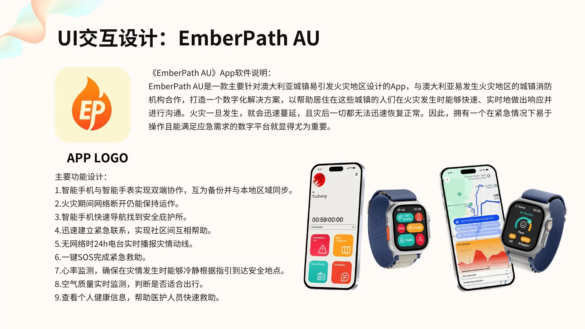
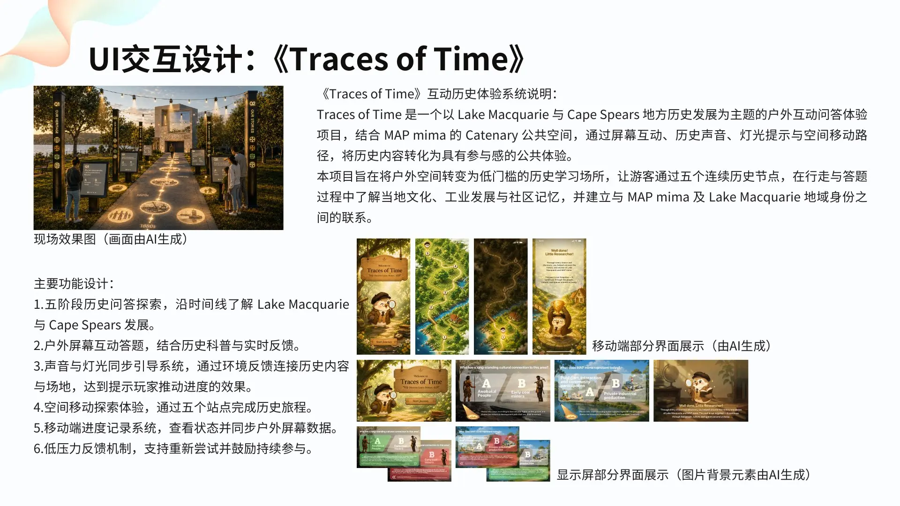
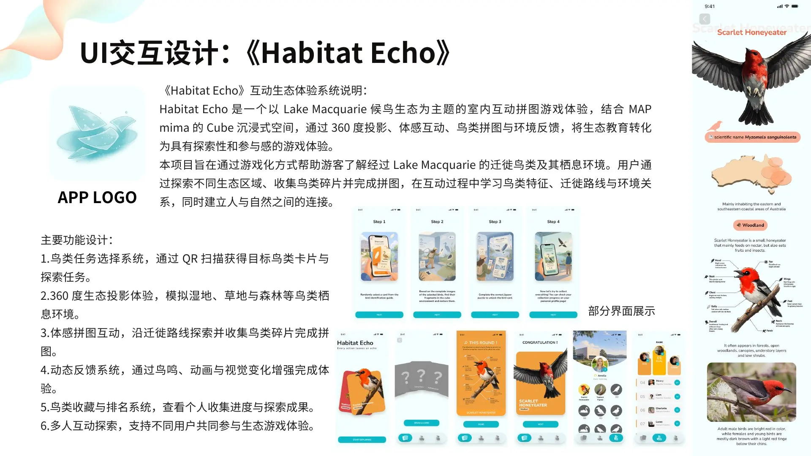
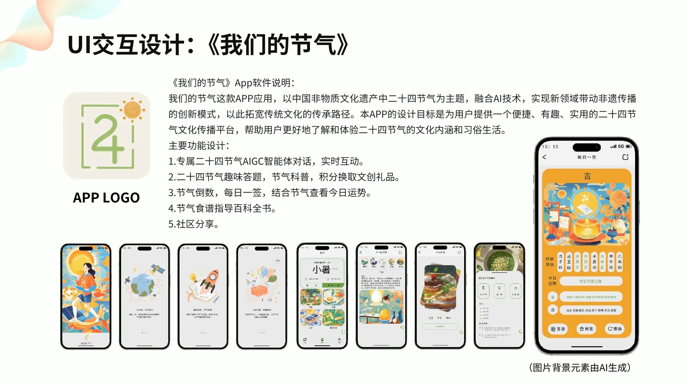
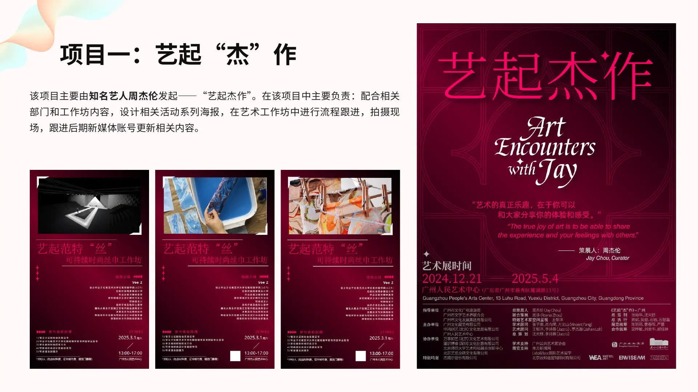
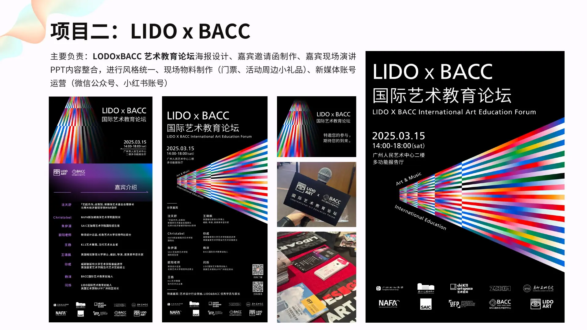
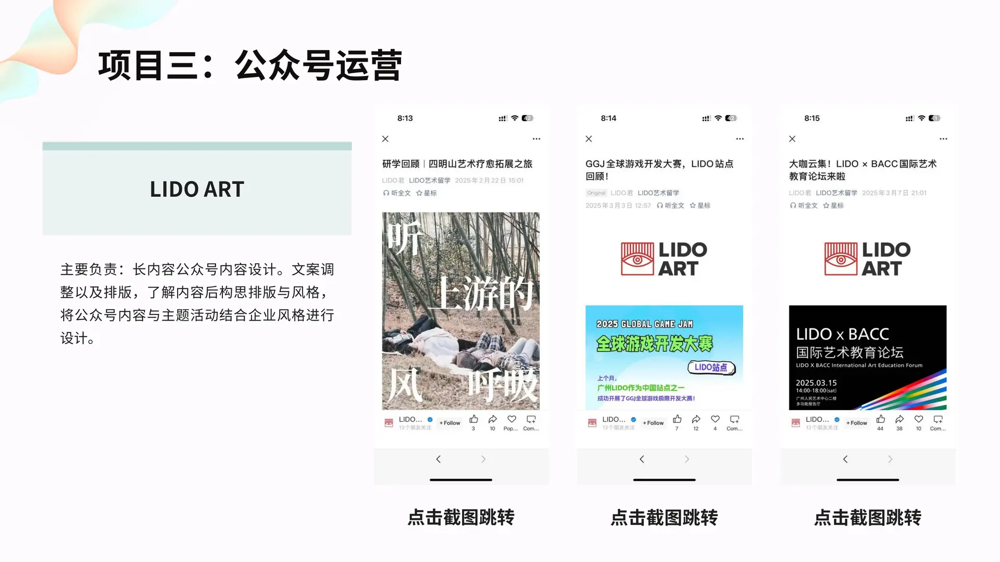
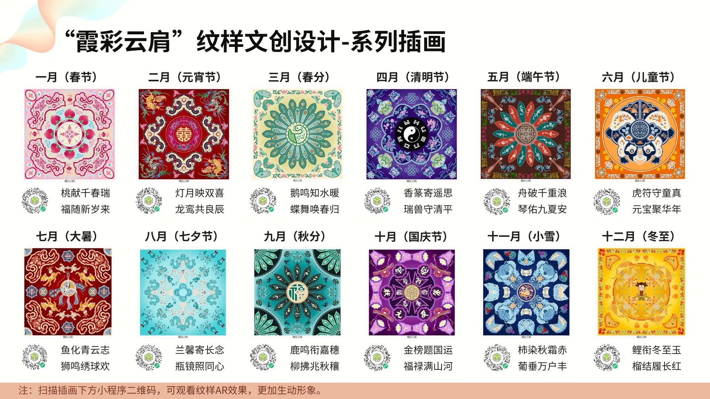
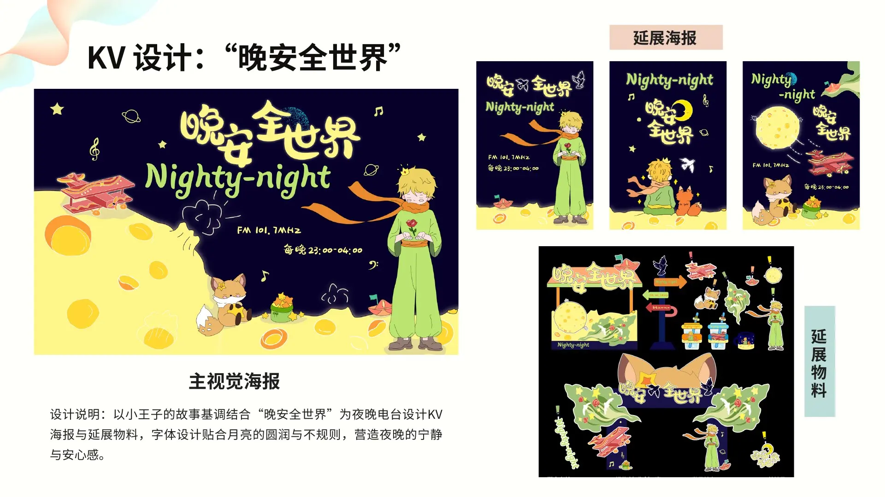
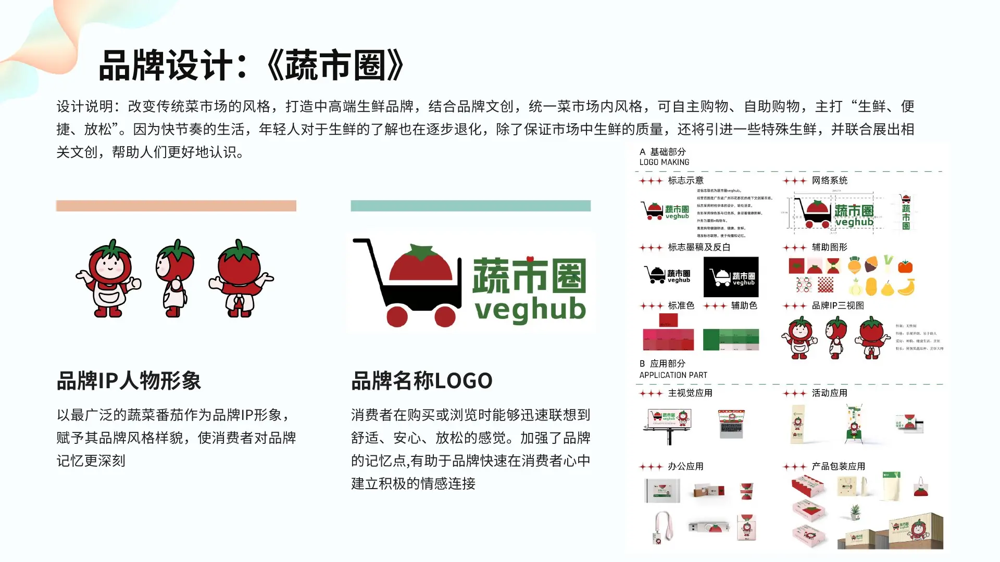

悉尼大学
交互设计和电子艺术
Experience & education
07 / 2025–03 / 2027
悉尼大学
Sydney School of Architecture, Design and Planning · Expected March 2027
2025
Guangdong Peizheng University · School of Arts
绩点 3.94 · 专业排名前 5% · 2025 年 6 月完成本科学习。
03–07 / 2025
UI and graphic design, basic photography, copywriting and social media content production.
12 / 2024–02 / 2025
UI design and campaign planning support.
Turning research into journeys, systems and visual stories that people can understand and enjoy.
Selected work · 2025–2026
Four projects spanning emergency systems, public-space interaction, environmental learning and cultural storytelling.

A mobile and smartwatch emergency experience designed for bushfire-prone Australian communities.

A five-stop outdoor experience that connects local history with screens, sound, light and movement.

A collaborative migratory-bird puzzle designed for MAP mima’s 360-degree Cube space.

A friendly digital platform that makes the 24 Chinese solar terms easier to explore and use in daily life.
Creative practice
Selected visual work across event identity, cultural products, branding, campaign design, 3D and photography.

Visitor observation, visual materials, workshop delivery and social content for a cross-disciplinary art exhibition.

Poster series, invitations, presentation styling, event collateral and social media.

Long-form mobile content design with clearer hierarchy, pacing and brand consistency.

A twelve-month illustration system inspired by traditional Chinese patterns and festivals.

A calm, playful identity and collateral set for a night-time radio concept.

A fresh-market identity designed around quality, convenience and a relaxed shopping experience.
Campaign, illustration, 3D, packaging and photography.
About my approach
My background combines visual communication with interaction design. I have completed four end-to-end interaction systems across mobile, wearable, immersive-screen and outdoor public-space contexts.
I work from research and information architecture through interface systems, prototyping and usability testing. In team projects, I focus on how a concept works, how it looks and how people understand it.
Let’s connect
I’d be happy to hear from you.